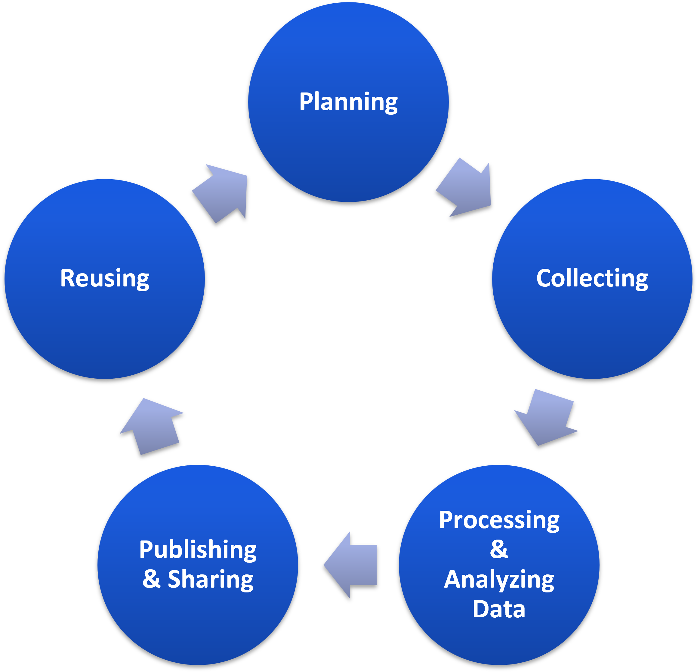
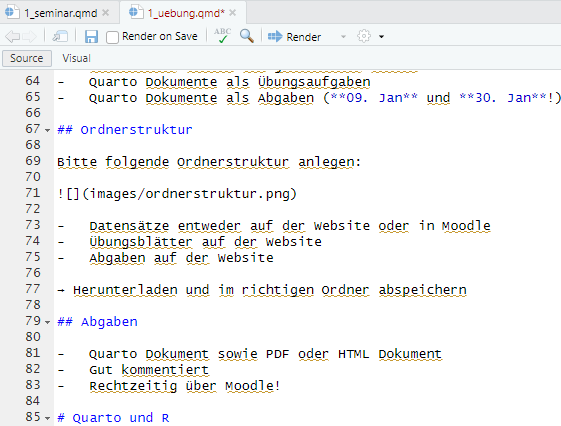
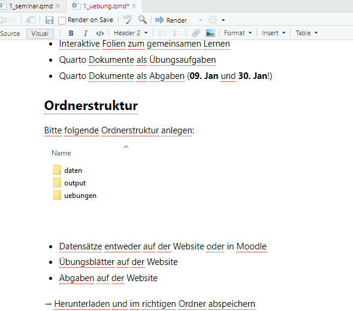
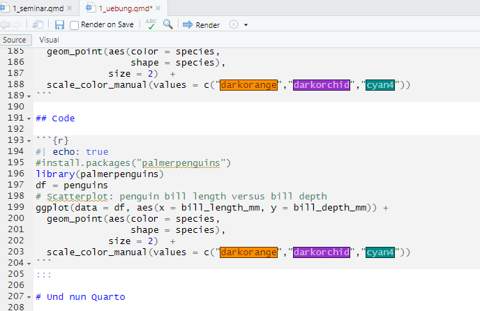
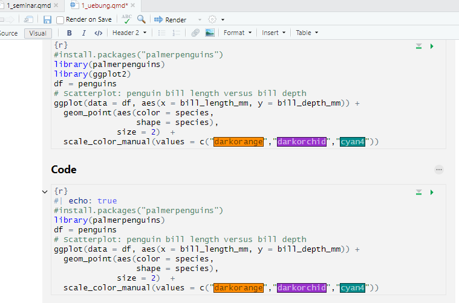
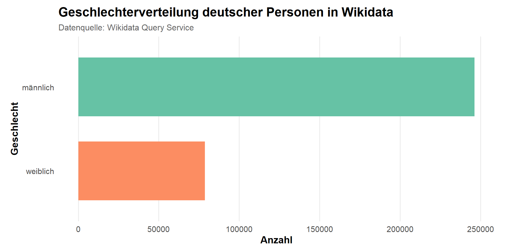
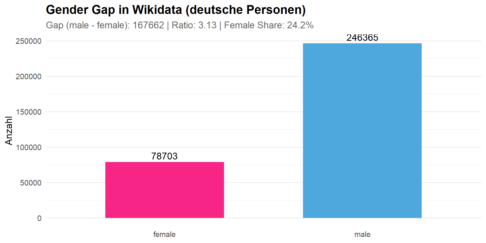

Gender Aspekte der Data Science
Sitzung 2b: Themensuche | Daten extrahieren | Forschungsdatenmanagement
Forschungs-datenmanagement
Was ist Forschungsdatenmanagement?
- “Gesundheitsvorsorge” für Daten
- Schützt die Daten vor Schaden
- Macht Daten funktional, nutzbar und auffindbar
- Alle Strategien, Prozesse und Maßnahmen zum Sammeln, Organisieren, Strukturieren, Speichern, Analysieren, Veröffentlichen, Weitergeben und Archivieren von Informationen, die im Rahmen eines Forschungsprojekts verwendet oder erzeugt werden
- Behandelt auch rechtliche und ethische Fragen (z. B. Einwilligungserklärungen, Eigentum, Lizenzierung)
Übersicht: Forschungsdatenmanagement

Warum Forschungsdatenmanagement?
- Verbessert Arbeitsabläufe
- Minimiert das Risiko von Datenverlusten
- Gute wissenschaftliche Praxis
- Erhält Datenqualität
- Spart Ressourcen
Konkrete Anwendung
- Teamprojekt mit Skript und Git
- Gute Praktiken der Dateiverwaltung & -benennung
- Gute Dokumentation des Codes
Organisation ist alles - Ordnerstruktur
- data/: Trennung von
rawundprocesseddata - R/: Falls R Skripte
- quarto/: Modularisierte Arbeit (01_intro, 02_methods, etc.).
- output/: Ergebnisse, Visualisierungen
Quarto und R
Was ist Quarto?
ist ein neues, quelloffenes, wissenschaftliches und technisches Publikationssystem
Das Ziel von Quarto ist es, den Prozess der Erstellung und Zusammenarbeit an wissenschaftlichen und technischen Dokumenten deutlich zu verbessern


Warum Quarto?
- Code und Ergbenisdokument in einem Zuge erstellen
- Kein lästiges hin und herkopieren
- Konsistente Implementierung praktischer Funktionen für alle Ausgaben: Tabsets, Code-Folding, Syntax-Highlighting, etc.
- Zugänglichere Standardeinstellungen
- Visual editor
- Leitplanken, besonders hilfreich für neue Lernende: YAML-Vervollständigung, informative Syntaxfehler, etc.
YAML
Dokument metadata
YAML ausführlicher
Dokument metadata
Text
Markdown kann mit jedem Editor bearbeitet werden, auch mit den Quelltext- oder visuellen Editoren von RStudio.


Code
Code kann auch mit den Quelltext- oder visuellen Editoren von RStudio bearbeitet werden


Quarto Output Dokumente
- Folien / Präsentation (HTML, PDF, PowerPoint)
- Manuskripte (Word Dokument, PDF, HTML)
- Websites (HTML)
Nun zu Gender Data Gaps auf Wikidata
🔎 Forschungsfrage für diese Sitzung
Wie groß ist der Gender Gap bei deutschen Menschen auf Wikidata?
Ziel: Wir untersuchen einen Gender Data Gap in einer der größten freien Wissensdatenbanken der Welt, Wikidata.
🛠️ Werkzeuge
Für die Analyse mit R nutzen wir zwei Hauptzugänge:
- Wikidata (SPARQL): Für strukturierte Daten (Geburtsdaten, Berufe, Geschlecht). Paket:
WikidataR. - Wikipedia (API): Für unstrukturierte Textdaten (Artikellänge, Edits). Paket:
WikipediRoderpageviews.
Wikidata: Strukturierte Daten
Wikidata speichert Informationen in Triplen (Subjekt - Prädikat - Objekt). Um diese abzufragen, nutzen wir SPARQL.
Wichtige IDs:
P21: Geschlecht (Property)Q6581072: Weiblich (Item)Q6581097: Männlich (Item)P31: “Ist ein(e)” (z.B. Q5 - Mensch)
Wikidata Page: Caroline Criado-Perez
Queries
Query: Welchen Beruf hat Caroline?
Query: Welche Staatsbürgerschaft hat Caroline und wo wurde sie geboren?
Query: Gender Gap bei Deutschen auf Wikidata
📦 Setup
Gender Gap Query in R
🚀 Anfrage an Wikidata API
# A tibble: 46 × 2
genderLabel count
<chr> <chr>
1 männlich 246365
2 weiblich 78703
3 nichtbinär 46
4 Transfrau 41
5 Transmann 10
6 neutrales Geschlecht 4
7 Intergeschlechtlichkeit 3
8 Agender 3
9 Cisfrau 2
10 Transfeminin 2
# ℹ 36 more rowsDatenaufbereitung
Datenvisualisierung
plot_wikidata = ggplot(df, aes(x = reorder(gender, count), y = count, fill = gender)) +
geom_col(width = 0.7, show.legend = FALSE) +
coord_flip() +
# Farbpalette
scale_fill_brewer(palette = "Set2") +
# Labels
labs(
title = "Geschlechterverteilung deutscher Personen in Wikidata",
subtitle = "Datenquelle: Wikidata Query Service",
x = "Geschlecht",
y = "Anzahl"
) +
# Minimaler, moderner Theme-Stil
theme_minimal(base_size = 14) +
theme(
plot.title = element_text(face = "bold", size = 18),
plot.subtitle = element_text(size = 12, color = "gray40"),
axis.title = element_text(face = "bold"),
panel.grid.major.y = element_blank(),
panel.grid.minor = element_blank(),
plot.margin = margin(10, 15, 10, 15)
)Datenvisualisierung

Gender Data Gap
df_gap = df %>%
select(-genderLabel) %>%
pivot_wider(names_from = gender, values_from = count) %>%
rename(male = männlich,
female =weiblich) %>%
mutate(
absolute_gap = male - female,
ratio_male_female = male / female,
female_share = female / (male + female)
)
df_gap# A tibble: 1 × 5
male female absolute_gap ratio_male_female female_share
<dbl> <dbl> <dbl> <dbl> <dbl>
1 246365 78703 167662 3.13 0.242